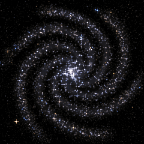

OpenAIPresence
Your presence, among the stars.
DISCORD PRESENCE
A little signal.
A whole galaxy.
Show your friends which OpenAI model you’re using, like GPT-6 Astra or GPT-5.6 Sol. Both companions can run together. Discord may display only one activity at a time.
Start manually, or detect recent Codex activity.
Starting local companion…
Settings and optional custom connection ＋
- Run the companion. Extract the Windows download and double-click Start OpenAI Presence.cmd. Node.js 24 or later is required.
- Share your session. Keep Discord desktop open and activity sharing enabled, then choose Automatic or Start session. The application ID and hosted galaxy are already included.
- Make it hands-free. Turn on Run on Windows startup, or double-click Enable Automatic Startup.cmd. Keep this app folder in place.
- Updating an installation. Choose Quit app in the old control panel before starting the updated copy. Enable Windows startup again if you moved the app.
Optional custom application: create one in the Discord Developer Portal and replace the Application ID below. Use the included HTTPS image URL, another public HTTPS image, or an asset key uploaded to your application. Uploaded assets are static; external image URLs can be animated.
No bot token, OpenAI API key, payment method, or server hosting needed. Each person connects their own Discord desktop.